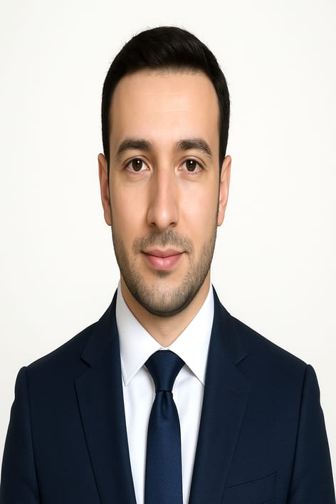

';">Aspiring DevOps Engineer | Infrastructure Automation Enthusiast
Passionate about transforming IT operations through automation and cloud technologies. Currently transitioning from customer service to DevOps engineering, bringing strong problem-solving skills and a customer-first mindset to infrastructure challenges. Dedicated to continuous learning and implementing modern DevOps practices to streamline development workflows and improve system reliability.
Hands-on experience with Docker containerization, building and managing containerized applications for learning purposes.
Learning and practicing infrastructure automation using Terraform and Ansible for consistent, repeatable deployments.
Developed various Bash and Python scripts to automate routine tasks and improve operational efficiency.
Frontend development experience with modern web technologies, providing valuable insight into application deployment needs.
Advanced studies in computer science with focus on distributed systems and software engineering.
Specialized studies in computer science fundamentals and modern technologies.
Comprehensive study of information systems, database management, and business technology integration.